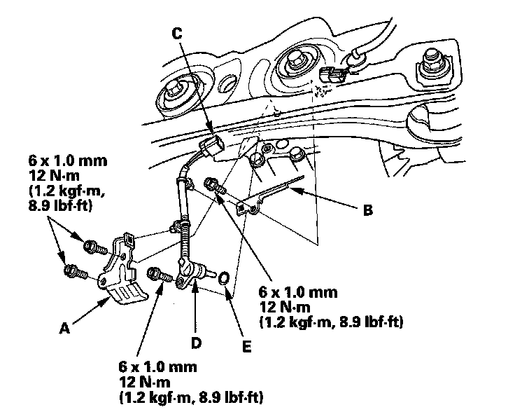

Differential Temperature Sensor/Switch: Service and Repair
Rear Differential Fluid Temperature Sensor Replacement1. Drain the differential fluid.
2. Remove the differential fluid temperature sensor cover (A) and the differential fluid temperature sensor harness stay (B) then disconnect the differential fluid temperature sensor connector (C).

3. Remove the differential fluid temperature sensor (D).
4. Install the differential fluid temperature sensor with a new O-ring (E) in the reverse order of removal.
5. Refill the differential fluid.